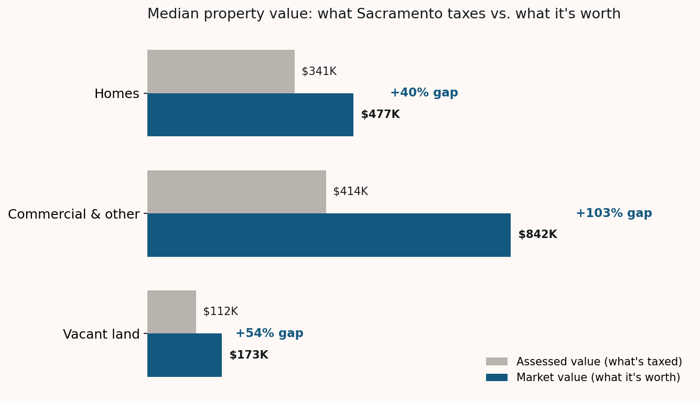
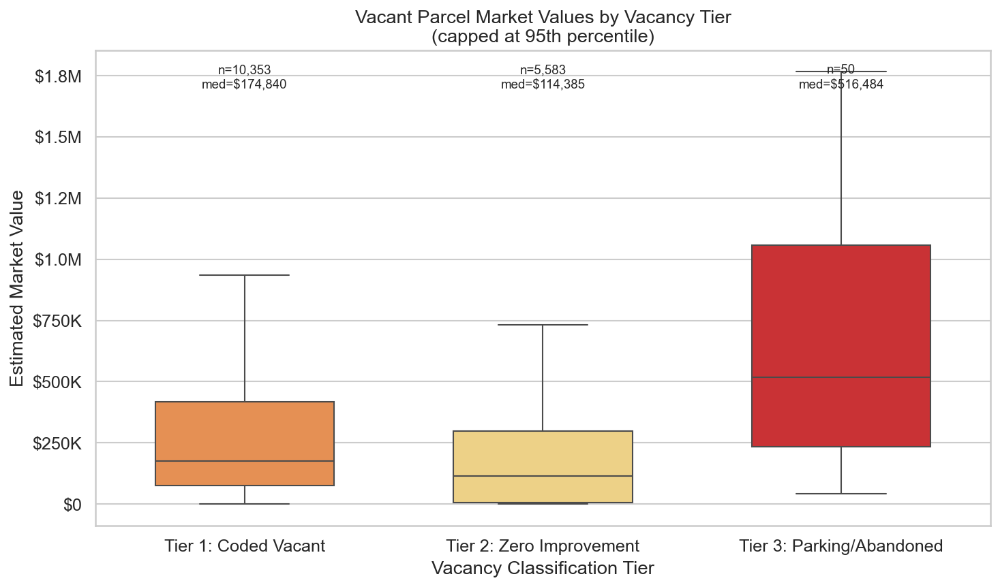
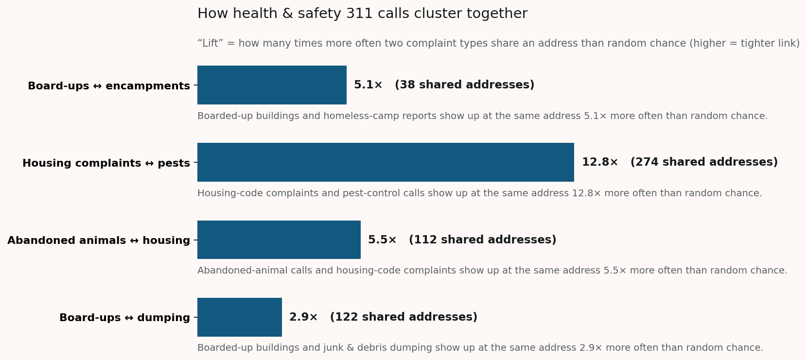
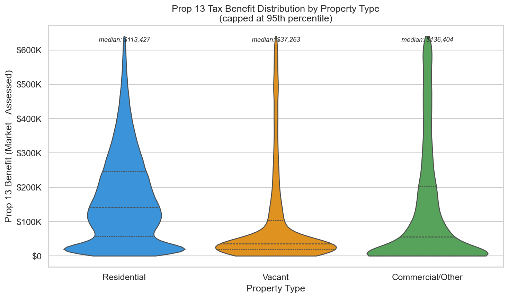
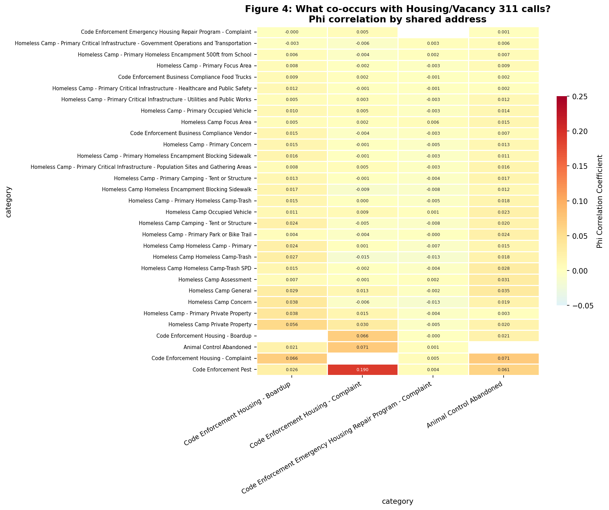
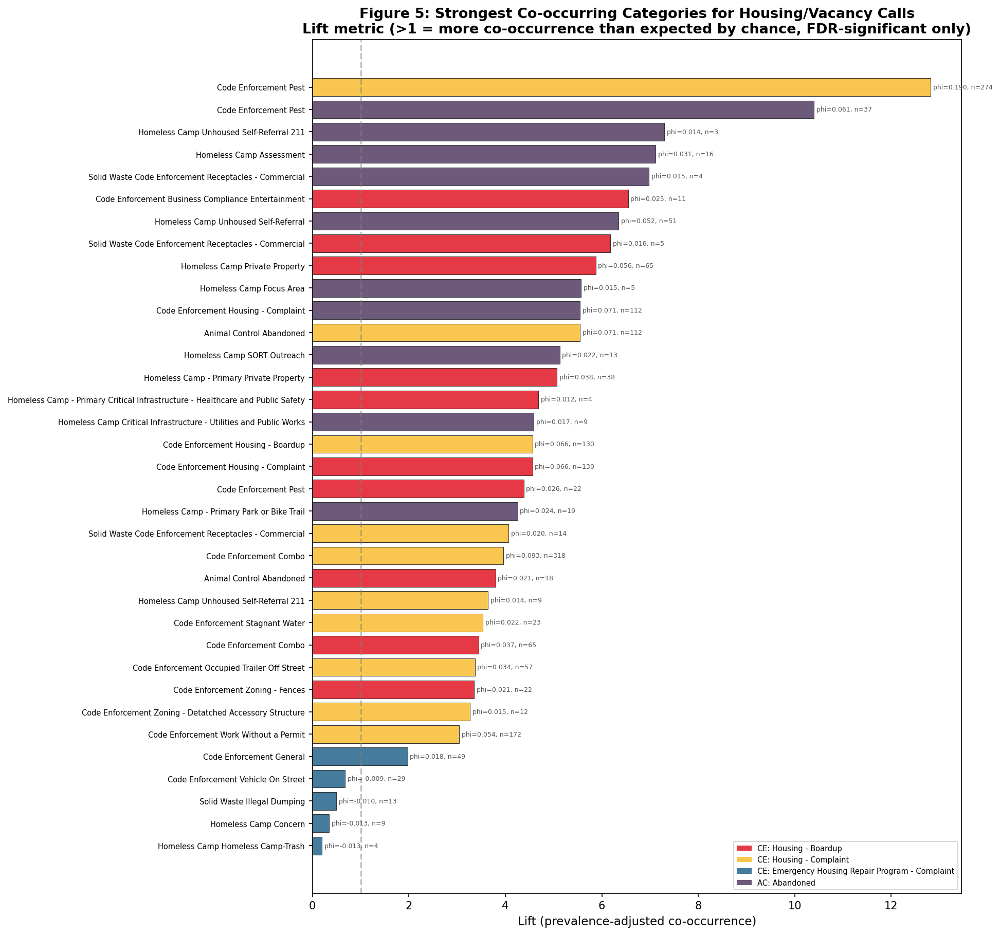
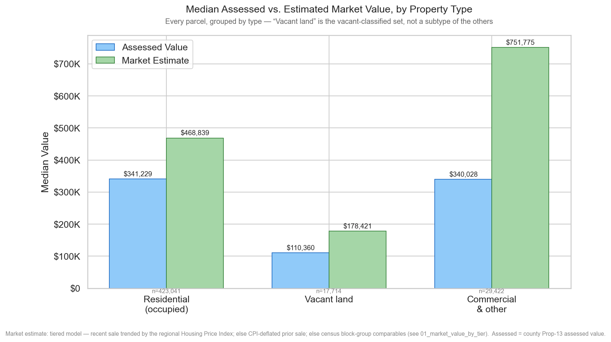
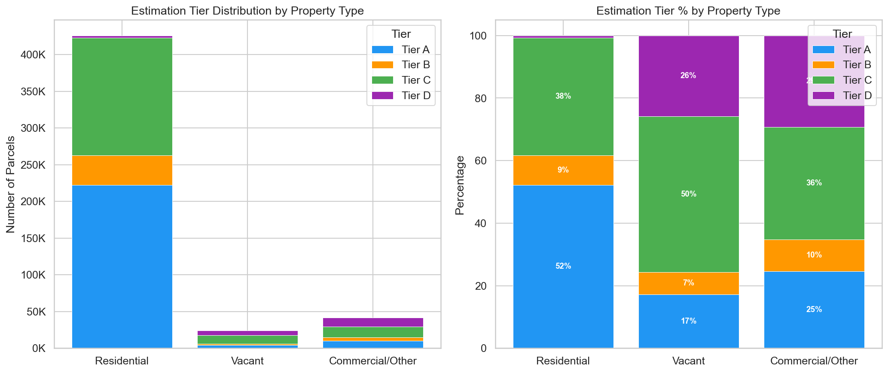

↑ $57,223 median Prop 13 benefit per parcel
A Civic Hackathon Audit · Sacramento County, 2024
Across 491,698 parcels in Sacramento County we identified 28,670 that are vacant or underused — and estimated the present‑day market value of every parcel using sale prices, the FHFA Sacramento House Price Index, and census‑block comparable sales. The gap between the assessment roll and what these parcels would actually sell for is a conservative floor on what a vacancy fee could put back to work.
Proposition 13 caps annual increases in assessed value at 2 %. After decades of appreciation, the assessment roll has drifted far below what these parcels would actually sell for. The gap is largest on parcels that change hands rarely — which is to say, the ones most likely to sit vacant.
↑ $57,223 median Prop 13 benefit per parcel
↑ $133,146 median Prop 13 benefit per parcel
↑ $123,224 median Prop 13 benefit per parcel

The County’s land‑use codebook flags some parcels as vacant outright, but plenty more sit underused without that label. We layered three signals to catch them.
Sacramento land‑use codes beginning with I — explicitly vacant
residential, commercial, or industrial land per the assessor’s schema.
Parcels with $0 in improvement value — no taxable structure on the lot — excluding infrastructure, parks, agriculture, and government holdings.
Surface parking lots (code BFH) and abandoned service stations
(code BFK) — economically vacant even where a structure stands.

Every blue dot is a vacant parcel; every orange point is a 311 health & safety call (boarded buildings, housing complaints, abandoned animals). Where they overlap, you are looking at the most actionable targets for a vacancy fee.
We analyzed 1.5 million 311 calls and looked for categories that show up at the same address far more often than chance would predict. A handful of complaints reliably travel together — and they line up with the same parcels we flagged as vacant.

Every parcel in the county received an estimate via a four‑tier waterfall. Tiers fall back to less specific data only when better data is missing.
Outliers are tempered with a 5×‑assessed sanity cap; 31,556 parcels were
capped (the uncapped value is preserved for audit). The four‑tier estimator
was cross‑checked against an independent methodology by a teammate;
agreement is high on residential and divergent on large commercial — see
the compare_three_way report in the repo.
ATNHPIUS40900Q — FHFA all‑transactions HPI, Sacramento MSACUUR0400SA0 — West Region CPI (Prop 13 deflator)The full statistical figures behind the simplified summaries above. Click any image to enlarge.





The numbers are the conservative floor. Help us turn them into policy.